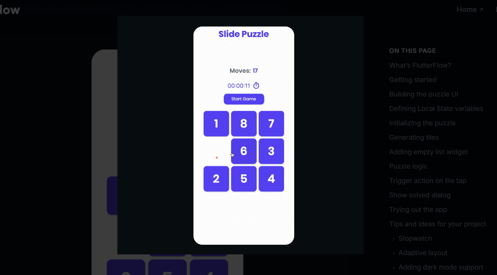

Sliding Block Puzzle Game
A web-based Sliding Block Puzzle game developed using HTML5, CSS, and JavaScript as part of a university project. The game highlights modern front-end development skills, including responsive layout, dynamic user interaction, and intuitive visual design. It demonstrates knowledge of DOM manipulation, event handling, and algorithmic logic to create an engaging and interactive puzzle experience.
- HTML5
- CSS
- JavaScript